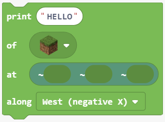
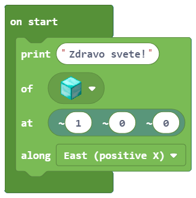

Detyra e projektit - Hello World¶
Le të jetë ky një shembull i thjeshtë, ku mesazhi “Hello, World!” do të paraqitet në Minecraft.
Procedura për zgjidhjen e çdo detyre (problemi) përfshin përshkimin e secilës nga fazat vijuese:
Faza 1: Mendoni për detyrën dhe shkruani ose vizatoni një algoritëm (hapa) për ta zgjidhur atë.
Faza 2: Vendosni komandat në mënyrë që programi të funksionojë sipas algoritmit.
Faza 3: Testoni programin dhe korrigjoni gabimet (nëse ka).
Ne do të kalojmë në të gjitha fazat së bashku, dhe do të krijojmë një program në të cilin ambienti i Minecraft (bota e krijuar) thotë përshëndetje.
Faza 1
Duke menduar për detyrën: Duhet të shfaqim përshëndetjen “Hello, World” në botën e krijuar.
Faza 2
Hapni Code Builder (duke shtypur butonin C); do të shfaqet një dritare redaktori ku mund të vendosni blloqe.
Bazuar në algoritëm, duhet të shfaqim mesazhin e dëshiruar (teksti: “Hello, World!”).
Për të shfaqur mesazhin duhet të përdorim bllokun  nga kategoria  .
.
Ky bllok ka katër parametra, të cilët përcaktojnë se si dhe ku do të shfaqet (shkruhet) mesazhi në botën e Minecraft:
Në fushën e futjes së tekstit të bllokut
print, do të shtypim tekstin e dëshiruar. Në rastin tonë, ky do të jetë porosiaHello, World!.Në fushën
of, ne mund të zgjedhim llojin e bllokut që do të përdoret për krijimin e tekstit.Në fushën
at, ne do të përcaktojmë pozicionin, ose më saktë koordinatat ku duam që teksti të shfaqet në botën tonë. Minecraft është një botë tre-dimensionale e përcaktuar nga tre koordinata (X, Y, Z):
• X - koordinoni lindje / perëndim
• Y - koordinoni lart / poshtë (sa lart ose poshtë bllokohet pozicionimi në lidhje me bazën)
• Z - koordinoni në jug / veri
Në fushën
along, mund të përcaktojmë orientimin, ose më saktë, boshtin përgjatë të cilit shfaqet (printohet) teksti.
Në bllokun onstart ne do të tërheqim bllokun print ku do të vendosim sa vijon:
Në fushën e vendosjes së tekstit Hello, World!
Në fushën of, do zgjedhim Block of Diamond nga lista, ky do të jetë “materiali” që do të përdorim për të shkruar mesazhin.
{kind=link}
Në fushën at, në fushën e vendosjes së koordinatave x, do të vendosim vlerën 1.
Do të përcaktojmë fushën along duke zgjedhur opsionin``East (positive X)`` nga lista drop-down.

Pas të gjitha ndryshimeve, programi i cili do të shfaqë përshëndetjen do të duket si ky:
Faza 3
Testimi i programit.
Klikoni në butonin 
“Hello, World!” shfaqet në botën Minecraft:

Pasi të kemi testuar programin, mund të konkludojmë se ai bëri atë që donim. Përshëndetja jonë shfaqet kur hapim botën tonë të Minecraft.